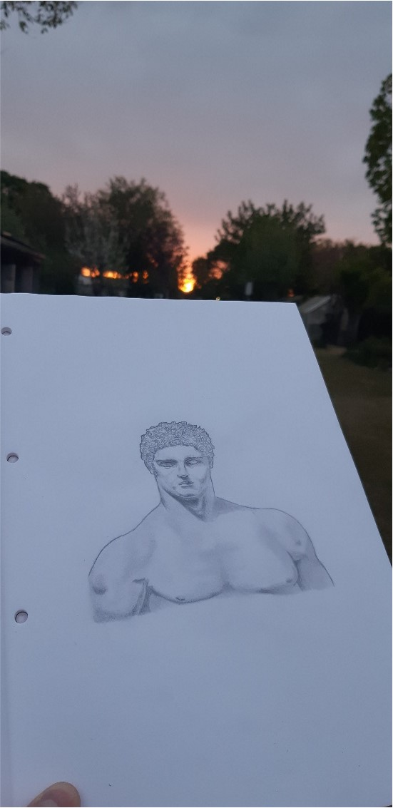
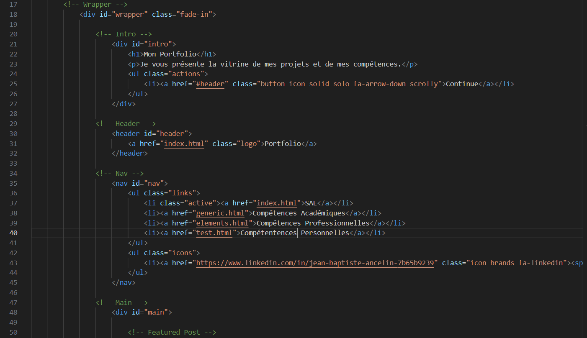

Compétences
Personnelles
À travers mes différentes activités et passions que j'ai pu
faire dans la vie de tous les jours, j'ai pu en tirer des
compétences et enseignements que je peux réutiliser au travail.
En tant que fan de football et surtout de l'Olympique de Marseille, j'ai appris à être résilient et à ne jamais abandonner, même lorsque les choses ne se passent pas comme prévu. Cela peut être appliqué dans les métiers HSE, où il est important de ne jamais perdre de vue la sécurité et de continuer à travailler dur même lorsque des obstacles surviennent.
En supportant mon équipe, j'ai également compris l'importance de travailler ensemble en tant qu'unité cohérente pour atteindre un objectif commun, cette mentalité de travail d'équipe est essentielle pour garantir que toutes les parties prenantes travaillent ensemble de manière harmonieuse pour atteindre des objectifs de sécurité et de durabilité dans le cas d'une entreprise.
Je suis passionné de dessin depuis tout petit, et cette passion m'a permis d'acquérir plusieurs compétences importantes pour le monde du travail.
Tout d'abord, le dessin a grandement stimulé ma créativité. En explorant différentes techniques artistiques, en mélangeant les couleurs, et en expérimentant avec les formes et les textures, j'ai développé une approche créative pour résoudre des problèmes, trouver des solutions novatrices et concevoir des projets originaux.
Ensuite, le dessin m'a aidé à développer ma capacité à observer et analyser. En regardant attentivement les objets, les paysages et les personnages, et en analysant les formes, les proportions et les perspectives, j'ai amélioré ma capacité à comprendre les situations complexes, décomposer les tâches en étapes gérables, et identifier les problèmes sous-jacents.
De plus, le dessin m'a permis de communiquer visuellement, je réutilise souvent cette compétence pour réaliser des affiches de prévention dans le cadre de l'Hygiène Sécurité Environnement.
Enfin, la pratique régulière du dessin m'a également renforcé ma patience et ma persévérance. J'ai appris à travailler lentement et méthodiquement, à accepter les erreurs comme partie du processus de création, et à continuer à dessiner jusqu'à ce que j'obtienne le résultat que je cherchais. Cette compétence est précieuse dans tous les aspects de la vie professionnelle, où il est souvent nécessaire de faire preuve de patience pour atteindre des objectifs à long terme.
J'ai également acquis de l'autodiscipline, l'humilité et le respect à travers le sport comme le karaté ou le basketball.
Comme vous pouvez le voir à gauche j'ai quelques compétences informatiques puisque j'ai codé ce site, je suis aussi à l'aise avec les logiciels Microsoft (Word, Excel, Powerpoint, Project etc.)